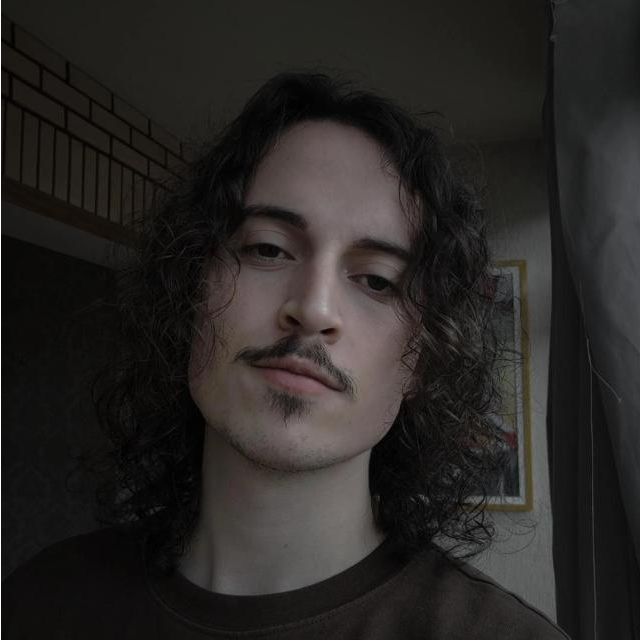
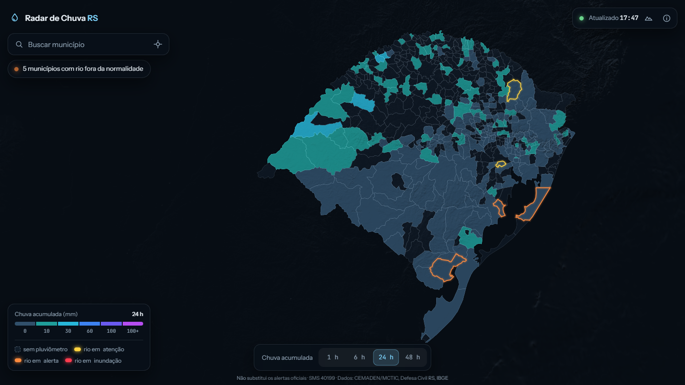

Desenvolvedor Full Stack · Automação de processos · Integrações
Lucas de Mélo Berra
Crio sistemas corporativos, aplicativos e plataformas web com regras de negócio complexas, da análise à produção.
Em destaque · projeto público · código aberto
Radar de Chuva RS
Mapa em tela cheia da chuva acumulada e da situação dos rios em cada município do Rio Grande do Sul, com dados quase em tempo real do CEMADEN e da Defesa Civil RS.

Outros projetos
-
Rejoga
em produção · código privadoMarketplace de boardgames para o mercado brasileiro: anúncios, pedidos, logística, notificações, suporte, mediação e painel administrativo.
React · Tailwind CSS · Node.js · APIs REST · PostgreSQL · Supabase · AWS S3 · Mercado Pago · Melhor Envio
-
Sistemas para o setor industrial
código privadoSistemas sob medida para a operação de uma indústria: automação de processos, rastreabilidade com QR Code, integração entre sistemas web, leitores e impressoras de etiquetas, e aplicativos móveis para rotinas operacionais.
Node.js · PHP · Flutter · C++ · Integrações com hardware
Experiência
-
2022 – atual
Técnico de Sistemas Sênior · Setor industrial
Soluções sob medida para setores específicos: automação de processos, integração de sistemas e manutenção de sistemas críticos usados diariamente.
-
Projeto privado em produção
Desenvolvedor Full Stack · Rejoga
Desenvolvimento e evolução de um marketplace de boardgames: front-end em React e Tailwind CSS, back-end em Node.js com APIs REST, e pagamentos e logística integrados.
Stack
- Linguagens
- JavaScript · TypeScript · PHP · Dart · C++ · Python
- Front-end e mobile
- React · Tailwind CSS · Flutter
- Back-end
- Node.js · Express · APIs REST · FastAPI
- Dados e infraestrutura
- PostgreSQL · Supabase · Docker · Render · AWS · IIS